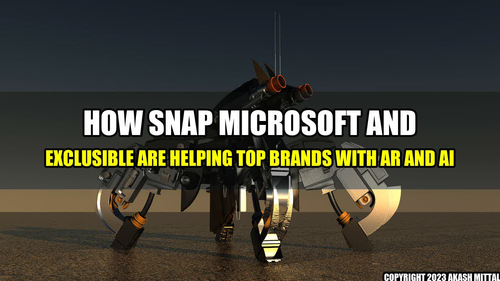

How Snap, Microsoft, and Exclusible Are Helping Top Brands with AR and AI

Imagine you are walking down the street, checking your phone, and you see an impressive piece of clothing. You wonder how that would look on you, but trying it is not an option. That is where augmented reality (AR) comes into play, allowing you to try on those clothes virtually before deciding to buy. Similarly, artificial intelligence (AI) can help improve the customer experience by understanding user behavior and preferences to make personalized recommendations that match users' interests and needs.
Concrete Examples of How Top Brands Use AR and AI with the Help of Snap, Microsoft, and Exclusible
- Nike has implemented AR through the Nike Fit app, which allows users to scan their feet to get their exact size and find the perfect pair of shoes.
- Zegna's virtual personal shopper, Zegna on Demand, uses AI to provide customized suggestions based on a user's preferences and purchasing history.
- Shiseido worked with Microsoft to develop a skincare app called Optune that uses AI to provide personalized skincare recommendations based on users' skin data and preferences.
These are just a few examples of how companies are using AR and AI to help their customers have the best experience possible. However, implementing this technology requires expertise, and that is where Snap, Microsoft, and Exclusible come in.
Conclusion: How Snap, Microsoft, and Exclusible Are Revolutionizing AR and AI
- Snap has introduced AR development platforms such as Lens Studio, allowing developers to create AR experiences easily, and Spectacles, smart glasses that can record the user's experience in AR.
- Microsoft's Azure provides machine learning and cognitive services, allowing businesses to implement AI easily.
- Exclusible focuses on digital transformation and consults businesses on AR and AI implementation strategies and innovative technologies.
In conclusion, AR and AI are revolutionizing retail and other industries, and businesses must adapt to remain relevant. Companies like Nike, Zegna, and Shiseido are already using AR and AI to provide their customers with the best experience possible, and Snap, Microsoft, and Exclusible are there to help them achieve their goals.
References:
Further Readings and Hashtags:
Akash Mittal Tech Article
Share on Twitter Share on LinkedIn